Four axioms, one ranking device, four canonical utility families — the primitives that drive every demand curve from Ch 5 onward.
Dr. Richeng Piao
Department of Economics
Northeastern University — 100 min
Learning Objectives
By the end of class today, you will be able to…
4.1
State and motivate the four axioms — completeness, transitivity, monotonicity, convexity — and identify a real-world failure mode for each. (Bloom L3)
4.2
Construct indifference curves from a utility function and compute the MRS as \(MU_1/MU_2\) via implicit differentiation. (Bloom L4)
4.3
Prove that monotonic transformations of \(U\) preserve the MRS, and explain why this is the formal content of ordinal utility. (Bloom L4)
4.4
Apply the four canonical utility families — Cobb-Douglas, perfect substitutes, perfect complements, quasilinear — to compute MRS and predict whether the optimum is interior or corner. (Bloom L4)
4.5
Identify non-convex preferences from a utility function and connect lock-in markets (smartphone ecosystems, frequent-flyer status) to the convexity axiom. (Bloom L5)
How do we turn satisfaction into a number?
The old hope (1890s)
Utility was thought to be a real, measurable, cardinal scale. A cardinal ranking would let you say how much better one bundle is than another — not just which one wins.
The modern attempt — neuroeconomics
Grounds economic decisions in first principles — calories, water, warmth — and uses fMRI and PET scans to watch the brain while subjects make economic choices.
Measuring “satisfaction” directly — a century-old dream.
Obvious problems with a cardinal scale.
• Comparing two different consumers' preferences might make no sense at all.
• There is no real-world measuring stick for how much more a consumer likes bundle \(A\) than bundle \(B\).
Ordinal = comparing rankings. Cardinal = comparing differences. Consumer theory needs only the first.
Individual Objectives and Preferences
Economists assume consumers are rational — able to “optimize” their consumption decisions given scarce resources.
“De gustibus non est disputandum” — there is no disputing about taste. Economics doesn't judge what you want; it takes preferences as given.
To predict choices, we need a consumer's preferences: between any two products \(a\) and \(b\), which is preferred — and how does that ranking behave?
Preference — revealed by what people do
We can't read minds — but we can watch actions. Far more plausible to infer preferences from what people actually choose.
“Actions speak louder than words.”
Principle of Revealed Preference. If a person chooses \(a\) over \(b\) when both are affordable, then they must prefer \[a \succeq b.\]
Flawless? Of course not — but an extremely useful approximation. People tend not to leave money on the table.
Streaming market share — revealed by subscribers
40%
Netflix
30%
Disney+
20%
Hulu
One subscriber's choice reveals a ranking. Aggregate them → market share.
Preferences — comparing consumption outcomes
An ordinal ranking lets us order bundles from best to worst. For any two bundles \(a\) and \(b\), we allow exactly three answers:
\(a \succ b\) — strictly prefer \(a\) over \(b\)
\(a \prec b\) — strictly prefer \(b\) over \(a\)
\(a \sim b\) — indifferent between \(a\) and \(b\)
A consumer's preferences are just the list of all such comparisons. The "rules" of utility allow only an ordinal ranking — never a cardinal "how much."
a
?
b
Which do you prefer — a, b, or neither?
Do Capuchin Monkeys Have Utility Functions?
Chen, Lakshminarayanan & Santos (2006)
Taught capuchins to use tokens as currency. Then watched them “shop” for jello, apples, grapes, cucumber.
What they found
Consistent ranking: jello > apple > grape > cucumber
Transitivity: if A > B and B > C, then A > C
Diminishing MU: 11th jello served < 1st
Loss aversion too — preview of Ch 18
Implication: If a monkey behaves consistently with utility theory, the theory is describing something more fundamental than human sophistication. Rational and irrational behavior may both be evolutionary bedrock.
The Experiment That Taught Monkeys How to Use Money
Chen, M. Keith, et al. “How Basic Are Behavioral Biases? Evidence from Capuchin Monkey Trading Behavior.” Journal of Political Economy, vol. 114, no. 3, 2006, pp. 517–37. JSTOR, https://doi.org/10.1086/503550.
• Preference ranking
🍓
100
≻
🍏
50
• More is better.
🍓🍓🍓🍓≻🍓🍓
🍏🍏🍏≻🍏🍏
• Preference transfer
If🍓≻🫐≻🍏
⟶🍓≻🍏
• Diminishing Marginal Utility
Felix already has 🍓 ×10 and 🍏 ×0.
Which one would he prefer to receive next?
§4.1–4.2 Preference Axioms & Utility
The rules preferences must obey — and the utility function that represents them
The Concept of Utility
🥒10
UTILITY FUNCTION
In economics, utility is a measure of a good or service's usefulness, worth, or satisfaction it provides to a consumer — often quantified in subjective units called “utils.”
Utility measures how “satisfied” consumers are.
A measure of happiness or well-being
It is not a measure of consumer income
A utility function maps what consumers consume to their level of well-being.
Represents the consumer's preferences
Can take a variety of mathematical forms
Must conform to the four assumptions about preferences (§4.1)
A utility function \(u(\cdot)\) represents preferences
A utility function \(u(\cdot)\) represents the preference relations \((\succ,\ \prec,\ \sim)\).
It assigns utility numbers to bundles so that, for any two bundles \(a\) and \(b\):
Note: the \((\cdot)\) is a placeholder for whatever we're considering — \(x\), \(y\), grades, lattes, dollars, …
How Much Utility Do You Get? (live class survey)
Type your initials, drag each slider to your “utils” rating right now — 1 = hate it, 100 = love it.
(1–3 letters)
☕Coffee
50
1 — hate it100 — love it
1255075100
🧋Boba
50
1 — hate it100 — love it
1255075100
0votes received
checking…
Press ↓ to see each student’s rating on a 2-D map · Press R to force-show class distribution
How Much Satisfaction Are You Getting Right Now From These Drinks?
Each dot is one student. Right = loves coffee. Up = loves boba.
0votes
checking…
Class summary
Waiting for votes…
Per student
Press ↑ to go back to the survey. Press R to refresh.
Reality — We Buy Bundles, Not Single Items
A consumer doesn’t pick one item — they pick a bundle: a combination of goods and services consumed together.
Which bundle? Depends on what kind of consumer you are. All feasible bundles must fit the budget in your pocket.
Principle of Revealed Preference (over bundles). If a consumer chooses bundle \(A\) over bundle \(B\) when both are affordable, then \[A \succeq B.\]
Flawless? Of course not — but an extremely useful approximation. People tend not to leave money on the table.
💵
Budget
$40
☕
Coffee
$4 each
🧋
Boba
$2 each
POTENTIAL CHOICES
(EACH COSTS $40)
Bundle
☕ Coffee
&
🧋 Boba
Bundle (V):
0 cups
20 cups
Bundle A:
2 cups
16 cups
Bundle B:
4 cups
12 cups
Bundle C:
6 cups
8 cups
Bundle D:
8 cups
4 cups
Bundle (P):
10 cups
0 cups
V = all boba · P = all coffee. Same $40, different lifestyles.
Utility Functions in the Wild — 1. Cobb-Douglas
Three bundles of \((x, y)\) = (coffee, boba). Pick whichever bundle gives you the most “utils.”
☕
1 cup Coffee (x)
+
🧋
1 cup Boba (y)
Bundles
• a = (1, 2)
• b = (2, 2)
• c = (2, 1)
Utility Function
U(x, y) = x0.8 · y0.2
Cobb-Douglas form — coffee weighted 4× more than boba at the margin.
Utils
• Ua = 1.15
• Ub = 2.00
• Uc = 1.74
Ranking: b ≻ c ≻ a. Bundle b (2 coffee + 2 boba) is the favorite of this Cobb-Douglas consumer.
Utility Functions in the Wild — 2. Perfect Complements
Some goods only work together. One bicycle needs one frame AND two wheels — extras of either alone add zero utility.
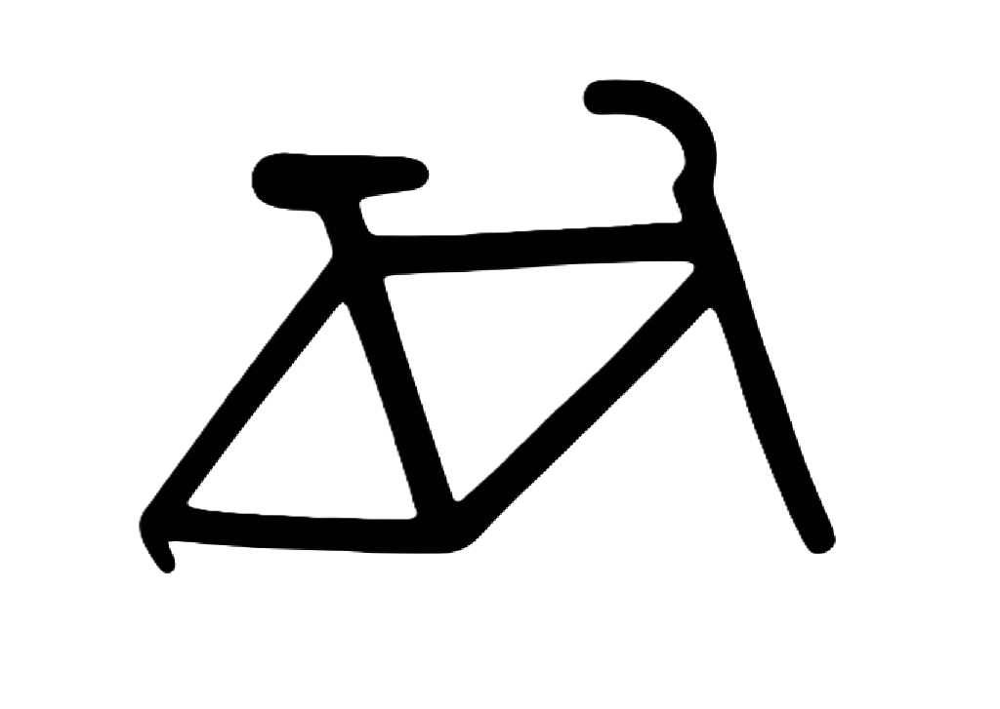
1 Bicycle Frame (x)
+
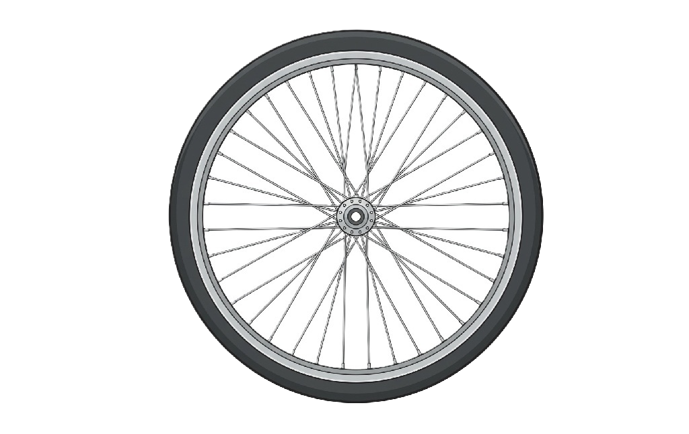
1 Set of Wheels (y)
Bundles
• a = (1, 2)
• b = (2, 2)
• c = (4, 3)
Utility Function
U = min(x, y)
Perfect complements (Leontief)
Utils
Ua = 1+ leftover
Ub = 2no leftover
Uc = 3+ leftover
Other examples: left + right shoes; peanut butter + bread; GPU + monitor. Adding more of just one side adds nothing.
Utility Functions in the Wild — 3. Perfect Substitutes
Some goods swap 1-for-1. For many purposes, the consumer just cares about total citrus — not which variety.
1 Tangerine (x)
+
1 Orange (y)
Bundles
• a = (1, 2)
• b = (2, 2)
• c = (4, 3)
Utility Function
U(x, y) = x + y
Perfect substitutes (linear)
Utils
Ua = 3
Ub = 4
Uc = 7
Only the ranking of utility numbers matters — not the numbers themselves.
Utility — A Ranking System
Utility: an abstract measure of the satisfaction a consumer gets from goods & services.
You don’t need to measure utils
You just need to rank options consistently. “I prefer pizza to salad” is enough.
Two flavors
Total utility: total satisfaction from a bundle
Marginal utility (MU): ΔTU from one more unit
Misconception: “Utility is measured in exact units.” Hicks (1934): we only need ordinal rankings. Total utils are an analytical fiction; relative rankings are real.
Why bother with axioms?
Four assumptions about how a consumer ranks bundles. If they hold, the representation theorem (Debreu, 1954) says: there exists a function \(U(x_1, x_2)\) with
\(U(A) > U(B) \iff A \succ B\).
The function exists because the ranking behaves nicely — not because we measured anyone's happiness.
The lineage
Pareto (1900s) ⇒ Hicks & Allen (1930s) ⇒ Debreu (1950s). The throughline: utility is an indexing tool, not a measurement of pleasure.
Today's notation
\(\succsim\): "at least as good as"
\(\succ\): "strictly preferred to"
\(\sim\): "indifferent to"
The four axioms
1. Completeness
For any \(A, B\): \(A \succsim B\), or \(B \succsim A\), or both. The consumer can always rank.
2. Transitivity
\(A \succsim B\) and \(B \succsim C\) \(\Rightarrow A \succsim C\). Internal consistency.
3. Monotonicity
More of every good (and strictly more of one) \(\Rightarrow\) strictly preferred. More is better.
4. Convexity
For \(A \succsim B\) and \(\lambda \in [0,1]\): \(\lambda A + (1-\lambda)B \succsim B\). Mixes are at least as good as extremes.
Each axiom does specific geometric work. We pick them apart one at a time.
Completeness — sounds innocuous, isn't
Faced with any two bundles, the consumer has an opinion — even if it's "indifferent."
What completeness rules out: “I have no idea.” Real users, faced with thousands of unfamiliar shows, often genuinely don't.
Platforms act as if preferences are complete — the algorithm has to rank one item above another somewhere on the page.
Without completeness, indifference "curves" can have holes. Calculus on a curve with holes is hard.
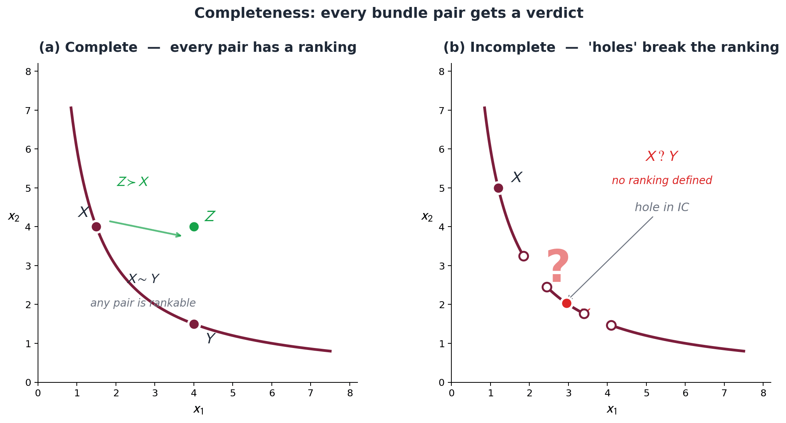
Transitivity and the money-pump argument
Transitivity: Sushi \(\succ\) Pasta and Pasta \(\succ\) Pizza \(\Rightarrow\) Sushi \(\succ\) Pizza. A ranking can’t loop back on itself.
Break it and you get a cycle: Sushi \(\succ\) Pasta \(\succ\) Pizza \(\succ\) Sushi. Now someone can drain your wallet — the money pump:
Each trade hands you a dish you like better — yet you go in a circle:
Hold Pizza, prefer Pasta → pay $1, swap Pizza → Pasta.
Hold Pasta, prefer Sushi → pay $1, swap Pasta → Sushi.
Back to Sushi — but $3 poorer. Nothing changed except your wallet; the loop runs forever.
Transitivity is the axiom that says human choice is not vulnerable to that scam.
It is also the axiom real consumers most reliably violate — we return to systematic departures in Ch 15 (prospect theory).
Theory and Data 4.1
Guadalupe-Lanas et al. (2020), Heliyon 6(3):e03459 — 70 subjects, pairwise edible vs non-edible choices. Strict transitivity held in only ~8% of the sample. Choi-Fisman-Gale-Kariv (AER 2007): some agents are remarkably consistent, others persistently violate.
Take-away: the axioms are an idealization that organizes choice behavior — not a psychological law.
Heads Up 4.1 — Transitivity is a modeling assumption, not a psychological law
When a problem set says “assume preferences are transitive,” it is asking you to assume the consumer is internally consistent. Real people often aren't. For Chs 4–13, transitivity is a maintained assumption; we relax it explicitly only in Ch 15 under uncertainty.
Why we still use it
Without transitivity, "the consumer maximizes utility" is meaningless — the optimum can cycle. Almost every prediction in this book rides on it.
When violations matter
Lab choice tasks, decisions under risk, choices that span long time horizons. Ch 15 formalizes prospect theory; Ch 18 brings in present-biased preferences.
Monotonicity — "more is better" with caveats
Bundle \(A\) has at least as much of every good as \(B\), and strictly more of one good \(\Rightarrow A \succ B\).
Geometric work: forces indifference curves to slope downward in two-good space. An upward-sloping IC would let you keep utility constant while picking up more of both goods — contradiction.
Caveats it sweeps under the rug: bads (pollution, second-hand smoke), bliss points (the 43rd taco), satiation. We work in the range of bundles where more is still better.
\((10, 0) \sim (0, 10)\) \(\Rightarrow\) the average \((5, 5) \succsim (10, 0)\).
Most consumers prefer variety to corners. Convexity captures it.
Geometric work: indifference curves bow toward the origin. Upper contour set is convex.
Where it fails: lock-in markets. Smartphone ecosystems — an all-Apple bundle and an all-Android bundle each deliver integration; the 50/50 mix sacrifices integration on both sides. U.S. v. Apple (2024) catalogs five lock-in mechanisms that produce exactly this shape.
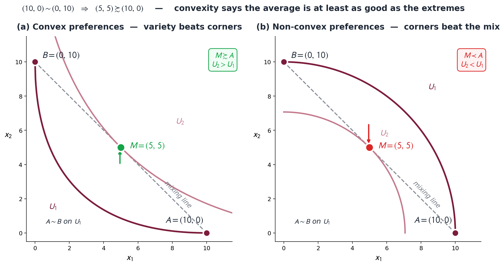
Poll #1: Which axiom do real consumers most reliably violate?
Lab studies of pairwise consumer choice routinely find most subjects violate one of the four axioms. Which one?
A) Completeness
B) Transitivity
C) Monotonicity
D) Convexity
60 sec to vote
Answer: B — Transitivity
Guadalupe-Lanas et al. (2020): strict transitivity held in only ~8% of subjects. Convexity fails in lock-in markets, but transitivity fails in everyday pairwise choice. Money-pump arguments motivate why the axiom is on the maintained list anyway.
Trap (D): Convexity does fail visibly in lock-in markets — but most consumers obey it most of the time. Transitivity fails far more often than students expect.
Step 2 — Connect them → the indifference curve \(\bar U = 7\)
An indifference curve is the set of all bundles giving the same utility. Here \((2,5)\), \((5,2)\), \((6,1)\) all yield \(U = 7\) — so they sit on one curve, \(\bar U = 7\). Because this utility is additive, the curve is a straight line of slope \(-1\): the perfect-substitutes case we formalize in §4.5.
Indifference Curves — The Map
Ordinal rankings mean we care about relative outcomes — some bundles are better, some worse. Start with the ones that are relatively equal.
A consumer is indifferent between bundles when he or she derives the same utility level from two or more bundles.
An indifference curve plots out all consumption bundles that provide the consumer with the same level of utility or satisfaction.
An indifference map stacks them — one curve per utility level. Curves farther from the origin = higher utility = preferred.
Extends the previous example: the red curve (with the three bundles) is \(\bar U = 7\); the blue curves are \(\bar U = 3, 5, 9\). For \(U = x_1 + x_2\), every curve is a straight line of slope \(-1\).
Netflix's Million Indifference Curves
2025 — Netflix scientist Kevin Zielnicki publishes The Value of Personalized Recommendations:
Replace Netflix's recommender with…
• Generic matrix factorization ⇒ engagement −4%
• Popularity-based "show what's trending" ⇒ engagement −12%
• Diversity of viewing also drops in both cases
The algorithm encodes each subscriber's taste as a function. Top of your home screen ⇒ \(U(\text{Stranger Things}) > U(\text{Bridgerton})\). Not a metaphor.
A derivative measures how a function changes as its input (the independent variable) changes — the rate of change, or slope, of the function at a specific point.
Marginal Utility — Computing It
Recall \(U = P^{0.8} J^{0.2}\). Each good's marginal utility is the derivative of \(U\) with respect to that good:
Power rule: bring the exponent down as a coefficient, then subtract \(1\) from the exponent. Each \(MU\) is decreasing in its own good (the negative exponent) — diminishing marginal utility.
Press ↓ — plug in numbers: one song of each, then one more.
Marginal Utility — A Numerical Look
Start with one song of each genre, then add one more — which adds more utility?
One more pop song adds \(\approx 0.74\) utils; one more jazz song adds only \(\approx 0.15\). At this bundle, pop is the better marginal buy — consistent with its larger exponent. (The calculus \(MU\)s at \((1,1)\): \(MU_P = 0.8\), \(MU_J = 0.2\) — the instantaneous rates the discrete jumps approximate.)
Utility \(U(x_1, x_2)\) is a ranking, not a happiness meter
\[U(A) > U(B) \iff A \succ B\]
What it tells you
\(U(A) = 100, U(B) = 50\) \(\Rightarrow\) \(A\) is preferred to \(B\). That's it.
What it does NOT tell you
\(A\) is "twice as preferred" as \(B\). Or that the consumer would trade \(A\) for two copies of \(B\). Or anything about happiness.
Ordinal = comparing rankings. Cardinal = comparing differences. Consumer theory needs only the first.
Sidebar: Pareto and the ordinal turn
Vilfredo Pareto (1848–1923), engineer-turned-economist at Lausanne. Manuale di Economia Politica (1906): all of consumer theory derives from orderings — never from a measured quantity of pleasure ("ophélimité").
Hicks & Allen (LSE, 1930s) and Debreu (Yale/Berkeley, 1950s) finished the apparatus. The number on the index is meaningless. The order is everything.
Operational content
Any strictly increasing transformation of \(U\) leaves the MRS — and every demand curve in this book — unchanged. We prove this in §4.4.
Cancellation, not philosophy — that's the operational content of "ordinal."
Application 4.1 — Spotify's Taste Profile
100B+
Lifetime Discover Weekly streams since 2015 launch
2026 selected markets: Spotify is testing the Taste Profile — a user-visible representation of the model's belief about preferences across genres, moods, contexts. With sliders to push the model up or down on each.
From a consumer-theory standpoint, the Taste Profile is the closest thing in consumer tech to writing \(U\) on the page. The numbers themselves don't measure happiness — but the ranking powers the next play, the next playlist, the next ad slot.
Why ordinal is enough
Spotify has no way to compare your "love" of jazz to your sister's "love" of country. Across users, the cardinal numbers are not comparable. Within a user, the ordinal ranking is enough to drive every recommendation decision.
This is exactly the work the theory says ordinal utility can do.
Characteristics of Indifference Curves
All four properties stem directly from the four assumptions about consumer preferences.
They can be drawn
Completeness & rankability
Curves farther from the origin = higher utility
Monotonicity — more is better
Curves never cross
Transitivity
Convex (bowed) toward the origin
Convexity — consumers like variety / diminishing MRS
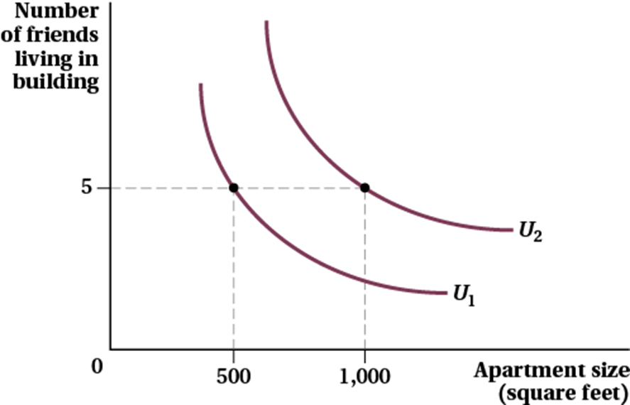
\(U_2\) lies farther from the origin than \(U_1\) — so every bundle on \(U_2\) is preferred.
Why Indifference Curves Cannot Cross
1. Bundles \(D\) and \(F\) lie on the same curve \(U_1\) ⇒ Joe is indifferent: \(D \sim F\).
2. Suppose a second curve \(U_2\) crosses \(U_1\) at \(F\) and also passes through \(E\) ⇒ \(F \sim E\).
3.Transitivity: \(D \sim F\) and \(F \sim E\) \(\Rightarrow D \sim E\).
4. But \(E\) has more of both goods than \(D\) ⇒ more is better ⇒ \(E \succ D\).
Contradiction. \(D \sim E\) and \(E \succ D\) cannot both hold — so the curves cannot cross.
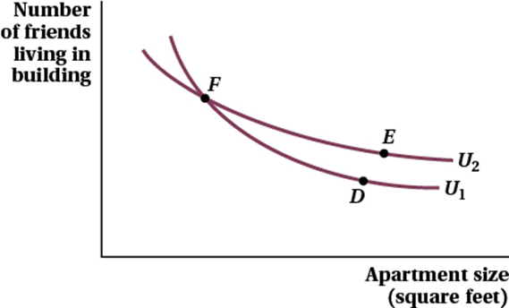
Figure A — the (impossible) case: \(D\) on \(U_1\), \(E\) on \(U_2\), both "tied" with \(F\).
Indifference curves — three properties from the axioms
From monotonicity. Upward slope \(\Rightarrow\) keep utility constant while picking up more of both goods. Contradiction.
2. Don't cross
From transitivity. If two ICs crossed at a bundle, three points on them would build a transitivity violation.
3. Bow toward origin
From convexity. The set of bundles weakly preferred to a given bundle is convex.
Each property is an axiom doing geometric work. Different axiom \(\Rightarrow\) different shape.
Tradeoffs Along an Indifference Curve
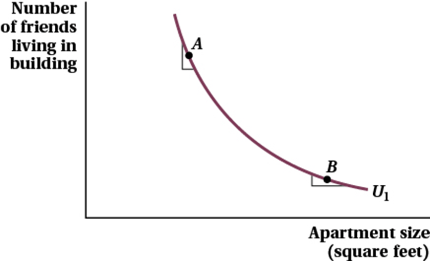
Figure 4.4 — the curve is steep at \(A\), shallow at \(B\).
As apartment size gets larger, the individual is less willing to trade off the number of friends for additional apartment size.
At \(A\) (small apartment): steep curve — willing to give up many friends for a bit more space.
At \(B\) (large apartment): shallow curve — willing to give up only a few friends for the same extra space.
That declining slope is the diminishing marginal rate of substitution — the reason curves bow toward the origin. We make the slope precise as the MRS next.
The Marginal Rate of Substitution
Indifference curves describe tradeoffs.
How much of one good are you willing to give up for one more unit of another good?
The slope of the indifference curve captures this tradeoff.
We call this slope the marginal rate of substitution (MRS).
\[\mathrm{MRS}_{XY} = -\frac{dY}{dX}\]
— the slope of the indifference curve at a point
The rate at which a consumer is willing to trade exactly one unit of good \(X\) for more of good \(Y\) — and stay equally well off.
The slope of the curve at the point is the MRS.
The Slope of an Indifference Curve is the MRS
At \(A\): \(\mathrm{MRS}_{LB} = -2\)
To get one more Latte, how many Burritos must I give up? → 2 Burritos.
At \(B\): \(\mathrm{MRS}_{LB} = -0.5\)
To get one more Latte, how many Burritos must I give up? → 0.5 Burritos.
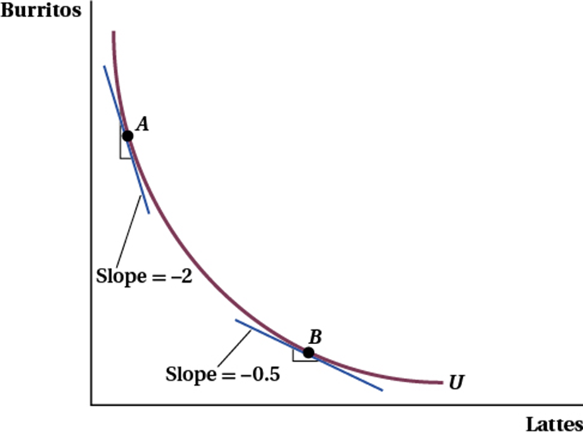
As you move down an indifference curve, you experience a diminishing marginal rate of substitution.
The Marginal Rate of Substitution and Marginal Utility
Consider point \(A\) from the previous figure (Figure 4.5):
\(\mathrm{MRS}_{XY} = -\dfrac{dQ_{Y}}{dQ_{X}} = \dfrac{MU_{X}}{MU_{Y}}\)
(in general)
What does the steepness of an indifference curve imply about consumer preferences?
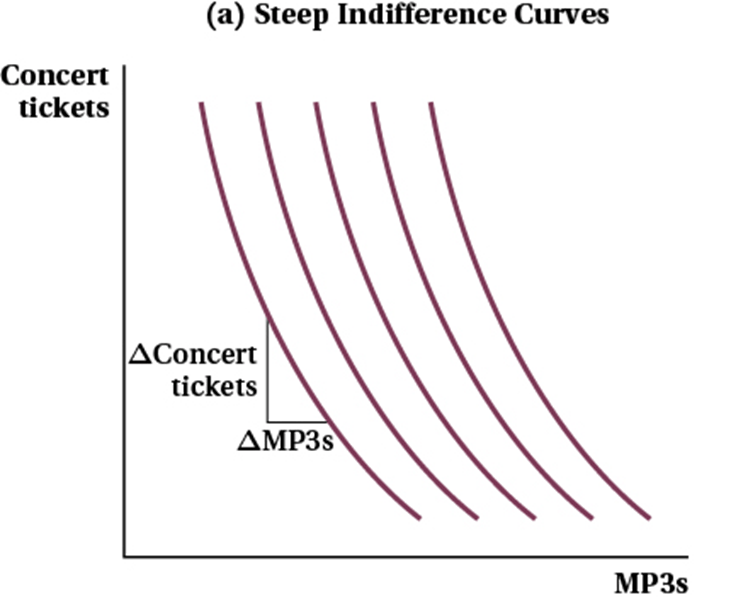
Steep curves: the consumer will give up a lot of \(Y\) to get one more unit of \(X\) — or could trade 1 unit of \(X\) for a lot of \(Y\).
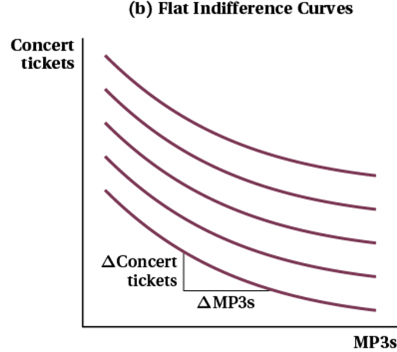
Flat curves: the consumer needs a large increase in \(X\) to give up one unit of \(Y\) — or could trade 1 unit of \(Y\) for a lot of \(X\).
Estimating ICs from real-world data — Nevo's cereals
Aviv Nevo's hedonic analysis of the U.S. breakfast-cereal market: treat each cereal as a bundle of characteristics (sugar, fiber, fat, calories) and back out preferences from how demand shifts with price across consumers.
Generalizes. For any level set \(f(x_1, x_2) = c\), the slope is \(-(\partial f/\partial x_1)/(\partial f/\partial x_2)\). We use this exact trick again in Ch 7 to derive the MRTS from a production function, and in Ch 8 for the cost-min tangency.
Walkthrough 4.1 — Mia's coffee + boba MRS
☕ Mia's week. She buys \(x_1\) coffees and \(x_2\) boba teas. She cares about both equally (same exponent on each) with diminishing returns on each. This week: 4 coffees, 9 bobas.
The consumer is willing to give up 2.25 units of \(x_2\) for one (small) more unit of \(x_1\) at this bundle.
Diminishing MRS in action. Move along the IC toward more \(x_1\): \(x_1\) up, \(x_2\) down, ratio \(x_2/x_1\) falls. The MRS falls. Convexity is doing the work.
For symmetric Cobb-Douglas, the MRS depends only on the ratio \(x_2/x_1\) — not on the levels separately. We'll use this property all of Ch 5.
Press ↓ — the Step 1 → Step 2 algebra, spelled out (exponent-rule refresher).
Different textbooks use different sign conventions: \(\mathrm{MRS} = dx_2/dx_1\) (negative), \(\mathrm{MRS} = -dx_2/dx_1\) (positive, our choice), or \(|\text{slope}|\). Mix conventions and your tangency condition in §4.6 will produce wrong-signed price ratios.
2316 convention (this book)
\(\mathrm{MRS}_{1,2} = MU_1/MU_2 > 0\). Always positive when both \(MU_i > 0\) (monotonicity).
Sanity rule
Tangency in Ch 5: \(\mathrm{MRS} = p_1/p_2\). Both sides positive. If yours doesn't match, your sign is the first thing to check.
Discussion 1 — How does the algorithm know your taste?
Netflix's recommender lifts engagement +4% over generic matrix factorization and +12% over a popularity ranking. Spotify's Taste Profile lets you see and adjust the model's belief about your preferences.
In your group, pick one platform — Netflix, Spotify, DoorDash, or Hinge — then answer:
What aspects of the consumer's preference does the algorithm encode? (similarity to other users, ranking over genres, time-of-day patterns…)
Which of the four axioms is the algorithm implicitly assuming — and which one would the platform have the strongest reason to doubt?
Think 2 min · Pair 2 min · Random call × 3
Press ↓ to reveal sample answers.
Discussion 1 — Sample Answers
Netflix
Encodes: ranking over titles, genre affinities, viewing-time patterns. Assumes: completeness (must rank every title). Doubts: transitivity — clicks aren't consistent over time.
Encodes: cuisine ranking, price sensitivity, delivery-time tolerance. Assumes: completeness. Doubts: completeness itself — a brand-new user has no history (cold start).
Hinge
Encodes: a ranking over profiles. Watch out: "most compatible" is ordinal — Hinge never claims a cardinal "how much" you'd like someone, only the rank. Exactly what the theory says is enough.
Pattern. Every platform relies on an ordinal ranking and assumes completeness by construction (it must order the page). The axiom each has the most reason to doubt is transitivity — or completeness for cold-start users.
§4.4 Monotonic Transformations
10 min · The formal content of ordinal — cancellation, not philosophy
Monotonic Transformations — Why Bother?
What is it?
Apply a strictly increasing function \(g\) to a utility function: \(V = g(U)\). It re-labels the utility numbers but never changes which bundle ranks higher.
In plain English
Change the numbers on the scoreboard without changing who is winning. The ranking stays put; only the labels move.
Real-life example
Celsius → Fahrenheit (\(F = 1.8\,C + 32\)): every number changes, but "which day was hotter" never does. Same move: a 5-star vs a 100-point movie rating.
Why do we care?
Utility is ordinal — the exact numbers are arbitrary. So we may pick whichever scale makes the math easiest (e.g. take \(\ln\) of a Cobb-Douglas) without changing a single prediction.
The payoff, coming up next: the MRS — and therefore every demand curve in this book — is completely unchanged by a monotonic transformation.
Strictly increasing transformations represent the same preferences
Define \(V(x_1, x_2) = g(U(x_1, x_2))\), where \(g: \mathbb{R} \to \mathbb{R}\) is strictly increasing (\(g'(U) > 0\)).
\(V\) represents the same preferences as \(U\): \(V(A) > V(B) \iff U(A) > U(B)\).
One-line proof: \(g\) is strictly increasing, so \(V(A) = g(U(A)) > g(U(B)) = V(B)\) iff \(U(A) > U(B)\). The ranking is preserved by definition of "strictly increasing."
Example transformations that all represent the same preferences as \(U\): \(\quad U + 7, \quad 2U, \quad U^3, \quad \ln U, \quad e^U, \quad \sqrt{U}\) (when \(U \geq 0\)).
Calculus Corner 4.2 — The chain-rule cancellation
Compute the MRS from \(V = g(U)\) using the chain rule:
The cancellation, not the philosophy, is the operational content of "ordinal." Every observable object in consumer theory — demand curves, welfare measures, comparative statics — is invariant to the choice of \(g\).
Walkthrough 4.2 — Mia again: \(U = x_1 x_2\) vs \(V = \ln(x_1 x_2)\)
☕ Same Mia. Her preferences over coffees \(x_1\) and bobas \(x_2\) can be written as \(U = x_1 x_2\) or as \(V = \ln(x_1 x_2) = \ln x_1 + \ln x_2\). Does swapping \(U\) for \(V\) change anything she would actually do? Check at \((4, 9)\).
Both deliver \(\mathrm{MRS} = 2.25\). The numbers assigned to \((4, 9)\) differ — \(U(4,9) = 36\) vs \(V(4,9) = \ln 36 \approx 3.58\) — but the indifference map and MRS are identical.
Practical use: in Ch 5 we routinely log Cobb-Douglas to make the algebra cleaner. The economics doesn't change.
Heads Up 4.3 — The ordinal/cardinal test
Whenever you're tempted to interpret a utility number as a quantity of happiness, ask: Would my conclusion change if I replaced \(U\) with \(\ln U\), or \(U^2\), or \(5U + 3\)?
Conclusion changes \(\Rightarrow\) you used cardinal information consumer theory doesn't have. Conclusion stays the same \(\Rightarrow\) you're safe.
Almost every prediction in this book passes the test. Welfare measures (CV/EV in Ch 6), demand curves, comparative statics, expected utility (Ch 15) — all invariant to monotonic transformation.
The exception:interpersonal utility comparisons. "Is your love of jazz greater than mine?" The theory has nothing to say. Welfare economics adds extra structure when needed.
Poll #2: Same preferences?
Original utility: \(U(x_1, x_2) = x_1 x_2\). Which of the following represents the same preferences as \(U\)?
A) \(V_1 = U + 7\)
B) \(V_2 = -U\)
C) \(V_3 = (\ln U)^2\), restricted to \(U > 1\)
D) Both A and C
90 sec to vote
Answer: D — Both A and C
\(V_1 = U + 7\): strictly increasing in \(U\). Same preferences. ✓
\(V_3 = (\ln U)^2\) on \(U > 1\): for \(U > 1\), \(\ln U > 0\) and \((\ln U)^2\) is strictly increasing in \(U\). Same preferences. ✓
\(V_2 = -U\): strictly decreasing. Inverts the ranking. Different preferences.
Trap (B): "Negating" looks like a transformation but flips the ranking. Always check that \(g\) is strictly increasing, not just "smooth" or "monotonic in some sense."
What if more is worse? — economic "bads"
An economic "bad" is any item where more of it reduces utility — the mirror of a "good."
Levitt & Syverson — what houses reveal
Goods (raise price/utility): extra bedrooms, central A/C, modern kitchen. Bad: age. For houses under 50 yrs, more years ⇒ lower sale price ⇒ less utility per house, all else equal.
The fix: redefine the bad as the absence of bad
Swap age on the axis for newness. Two goods on the axes ⇒ the familiar downward-sloping ICs return — standard framework restored.
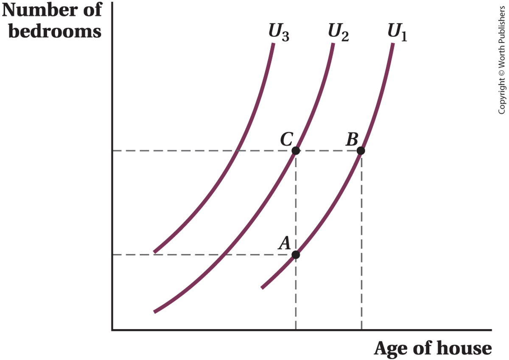
Bedrooms vs age (bad) — ICs slope up.
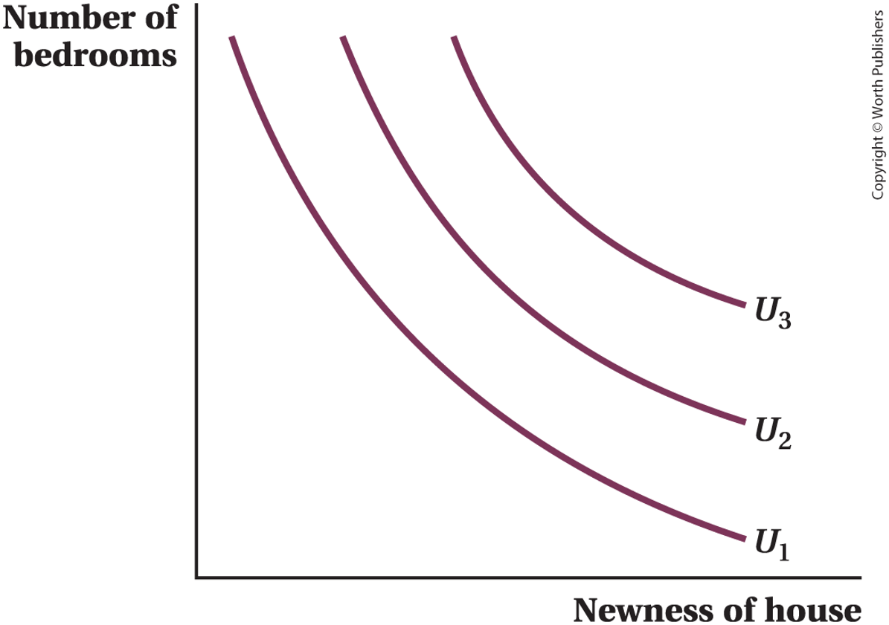
Bedrooms vs newness (good) — standard, downward-sloping ICs.
A household spends about a third of its income on housing and two-thirds on everything else — and that \(\tfrac{1}{3} : \tfrac{2}{3}\) split barely budges when rent rises or income grows.
2 — Why this is "Cobb-Douglas"
Wants some of both — never all-or-nothing
Trades off smoothly — not rigid fixed proportions, not perfect substitutes
The signature: a constant budget share on each good
3 — Write it as a function
\[U = x_1^{\alpha}\, x_2^{\,1-\alpha}\]
The exponent \(\alpha\) is that budget share — here \(\alpha \approx \tfrac{1}{3}\) on housing, \(1-\alpha \approx \tfrac{2}{3}\) on everything else.
Memorize this expression. It appears in roughly every Walkthrough in the rest of Part II. Taste factor \(\alpha/(1-\alpha)\) times bundle factor \(x_2/x_1\) — the structure separates cleanly.
Walkthrough 4.3 — Housing vs everything else at \((8, 12)\)
🏠 A household's monthly budget. \(x_1\) = housing (rent units) takes about 1/3 of income; \(x_2\) = everything else takes about 2/3. Evaluate at \((8, 12)\): 8 units of housing, 12 of everything else.
\(U(x_1, x_2) = x_1^{1/3} x_2^{2/3}\) — consumer values \(x_2\) twice as much as \(x_1\)
Sanity check. Symmetric Cobb-Douglas at the same bundle gives \(\mathrm{MRS} = x_2/x_1 = 12/8 = 1.5\). Our asymmetric \(\alpha = 1/3\) cuts that in half — consumer cares less about \(x_1\), so willing to give up less \(x_2\) to get more \(x_1\).
Interpretation. At \((8, 12)\), the consumer would give up \(0.75\) units of \(x_2\) for one (small) more unit of \(x_1\). They'd want a price ratio \(p_1/p_2 \le 0.75\) to spend more on \(x_1\) at the optimum.
Theory and Data 4.1 — Cobb-Douglas in BLS data
A signature prediction of Cobb-Douglas: the consumer spends a constant fraction \(\alpha\) of income on \(x_1\) — independent of income, independent of prices. (We derive this in Ch 5.)
Approximately Cobb-Douglas
Housing share, transportation share — move within only a few percentage points of the average across BLS CES income quintiles.
Where it fails: food
Engel's law — food's share falls steadily as income rises. Named for Ernst Engel (Prussian statistician, 1857).
Cobb-Douglas is a useful approximation for some categories, a deliberately imperfect approximation for goods with strong income effects. Ch 6 builds the formal apparatus to talk about how demand depends on income.
Source: BLS Consumer Expenditure Survey (https://www.bls.gov/cex/tables.htm). Engel (1857), Die Productions- und Consumtionsverhältnisse des Königreichs Sachsen.
The Curvature of Indifference Curves: Substitutes & Complements
The shape of a consumer's indifference curves reveals the relationship between the two products.
Relatively straight indifference curves describe goods that are more easily substitutable for one another.
Curves that are more convex to the origin describe goods that are more complementary to one another.
To illustrate, consider the two extreme cases:
i. Perfect substitutes
Goods the consumer will trade at a fixed rate for the same level of utility — the MRS is constant.
ii. Perfect complements
Goods the consumer must consume in a fixed proportion — extra units of one alone add nothing.
Perfect Substitutes — Starter Intuition
Sometimes a consumer only cares about how much they get in total — like oranges 🍊 and tangerines: you just want, say, 1 lb of citrus, and which one barely matters.
Example: imagine three alternative bundles of \((x, y)\):
\(a = (1, 2)\) \(b = (2, 2)\) \(c = (4, 3)\)
🍊 🍊
A valid utility function just has to rank them. Try \(v(\cdot)\) = SUM (total units):
Preferences for right and left shoes — most consumers consume them in a constant proportion (1:1).
At point \(A\): two right shoes and two left shoes.
Adding only another right shoe (bundle \(B\)) does not raise utility — still on \(U_2\).
Utility rises only with another left shoe as well (bundle \(D\)) — up to \(U_3\).
Perfect substitutes — constant trade-off rate
\[U(x_1, x_2) = a x_1 + b x_2, \qquad a, b > 0\]
MRS is constant
\(MU_1 = a, \quad MU_2 = b\)
\(\mathrm{MRS}_{1,2} = a/b\) — same everywhere.
Indifference curves: parallel straight lines with slope \(-a/b\).
Real markets
Same-octane gasoline at adjacent stations.
Stablecoins pegged to USD — USDT vs USDC (we'll qualify this).
Ch 5 preview. Perfect substitutes ⇒ corner solutions (almost always). Spend the entire budget on whichever good gives higher \(MU/p\). The standard tangency rule fails because the IC and budget line have the same slope at every interior point or different slopes everywhere.
Walkthrough 4.4 — Store-brand vs national-brand sugar
Step 3: Same answer at \((1, 1)\), \((10, 1)\), \((1, 10)\), \((100, 100)\). The MRS does not depend on the bundle.
The consumer cares 1.5 times more about a pound of national-brand than store-brand. They'd give up only \(2/3\) of a pound of national-brand to get one extra pound of store-brand — regardless of how much they already have.
Optimization preview. If \(p_1/p_2 < 2/3\): spend all on \(x_1\) (store-brand cheap relative to value). If \(p_1/p_2 > 2/3\): spend all on \(x_2\). If \(p_1/p_2 = 2/3\) exactly: anywhere on the budget line is optimal.
Application 4.2 — Stablecoins as near-perfect substitutes
USDC and USDT each promise dollar redemption: hold one token, claim one dollar. Most of the time, traders move value across exchanges and DeFi protocols treating them as interchangeable, with \(\mathrm{MRS} \approx 1\).
March 2023 SVB collapse. Circle (USDC issuer) held a portion of reserves at Silicon Valley Bank. USDC briefly traded as low as \$0.87. For a few hours, traders rushed to sell USDC for USDT or other dollar instruments — even at a 13% discount.
\$0.87
USDC bid floor during the March 11–12, 2023 SVB de-pegging
"Perfect substitutes" is a limiting case, not a description of any real market. Fast credible redemption \(\Rightarrow\) the model fits. Doubt about redemption \(\Rightarrow\) it breaks.
Ch 14 returns to how thin financial markets price in run risk.
Perfect complements — fixed proportions
\[U(x_1, x_2) = \min(a x_1, b x_2), \qquad a, b > 0\]
L-shaped indifference curves
Corner along \(a x_1 = b x_2\). Off the corner, the abundant good's marginal utility is zero; only the scarce good helps.
Real near-complements
Left + right shoes. Console + flagship game (Switch + Tears of the Kingdom, 2023). Insulin pump + infusion sets. Aircraft engine + maintenance contract.
MRS at the corner is undefined (kink). On the horizontal arm, \(\mathrm{MRS} = 0\). On the vertical arm, \(\mathrm{MRS} \to \infty\). Non-smooth utility.
Walkthrough 4.5 — Left and right shoes at \(\bar U = 3\)
\(U = \min(x_1, x_2)\), indifference curve at \(\bar U = 3\)
Three regions of the IC:
• Horizontal arm: \(x_1 \geq 3, x_2 = 3\). Adding more left shoes doesn't help.
• Vertical arm: \(x_1 = 3, x_2 \geq 3\). Adding more right shoes doesn't help.
• Corner: \((3, 3)\). Both at 3.
MRS values:
• At \((5, 3)\) on horizontal arm: \(\mathrm{MRS} = 0\)
• At \((3, 5)\) on vertical arm: \(\mathrm{MRS} = \infty\)
• At corner \((3, 3)\): undefined (kink)
\(\mathrm{MRS} = 0\) on the horizontal arm captures the perfect-complements intuition: extra left shoes are useless without matching right shoes.
Ch 5 preview. The optimal bundle always sits on the corner locus \(a x_1 = b x_2\), regardless of prices. The pricing question becomes "how far up the corner locus does the budget take us?" — not "where does \(\mathrm{MRS} = p_1/p_2\)?"
Application 4.3 — Console + flagship title
2017 — Nintendo launches Switch. Hardware sales modest untilThe Legend of Zelda: Breath of the Wild ships alongside.
For a substantial slice of consumers, the console was the title. The whole purchase made sense only paired.
2023 — Tears of the Kingdom repeats the pattern. Strong indirect network effects in console markets: hardware adoption and software supply move together.
When the model fits
The L-shape is an idealization. Real consumers do trade off hardware and software at some margin (some buy hardware first hoping titles arrive). But the sharp non-linearity — having neither is much worse than having both — is a real feature.
A launch without a flagship complementary title routinely underperforms one with. Industry analytics keep estimating the lift, and they keep finding it.
The Curvature of Indifference Curves
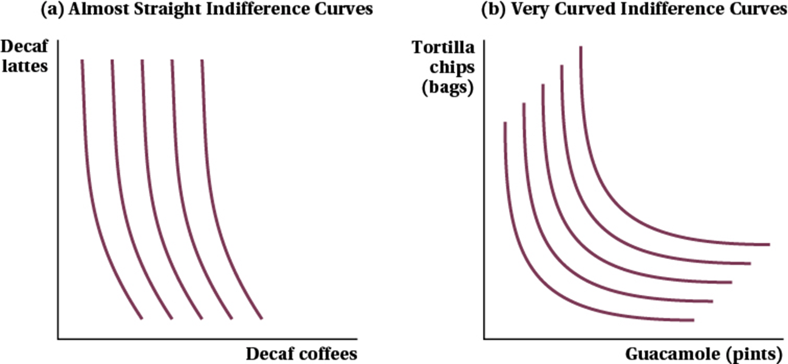
(a) Almost straight → close substitutes
Decaf lattes and decaf coffees are nearly interchangeable. The curves bow only slightly — MRS changes, but slowly. Behavior is near-SUM.
(b) Very curved → strong complements
Tortilla chips and guacamole pull hard toward each other. The curves bow sharply — MRS changes fast. Behavior is near-MIN.
Perfect substitutes and perfect complements are the endpoints. Curvature is a dial, not a switch — most real goods land somewhere in between.
Your Turn — A Neutral Good (Sofia's YouTube vs TikTok)
Sofia watches \(Y\) hours of YouTube and \(T\) hours of TikTok. More YouTube ⇒ happier. TikTok is neutral — doesn't move utility. Find the IC map and the MRS at \((T, Y) = (1, 1)\).
Step 1 — vary \(Y\) at fixed \(T\):
\(B = (1, 2)\) has more YouTube than \(A = (1, 1)\) ⇒ \(B \succ A\). Higher \(Y\) sits on a higher IC.
Step 2 — vary \(T\) at fixed \(Y\):
\(C = (2, 1)\) gives Sofia more TikTok than \(A\), but \(T\) is neutral ⇒ \(C \sim A\). Same for \(D, E\) at \(Y = 1\).
Step 3 — the shape: ICs are horizontal lines. \(A, C, D, E\) all sit on \(U_1\); \(B, F\) sit on the higher \(U_2\).
MRS at \((1, 1)\) is the slope of \(U_1\), which is \(0\). \(\mathrm{MRS}_{T, Y} = 0\) — Sofia gives up zero YouTube for an extra hour of TikTok.
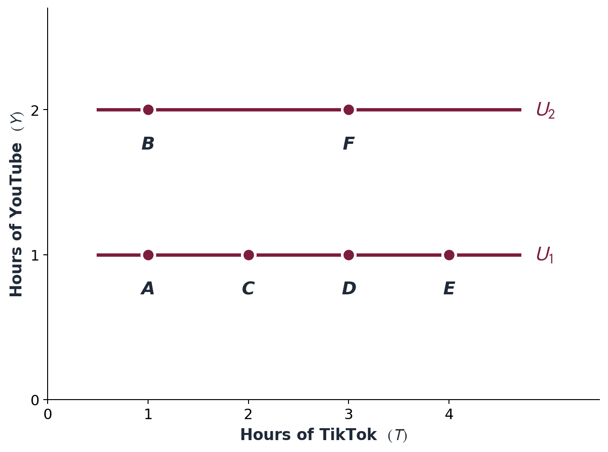
Horizontal ICs — the signature of a neutral good.
The Same Consumer Can Have Different Shapes
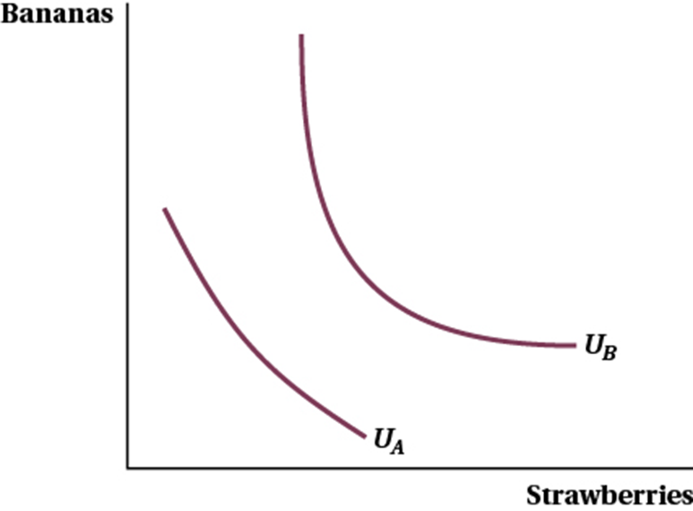
Figure 4.11 — 🍌 bananas vs 🍓 strawberries.
Initially, for low levels of utility \((U_A)\), bananas and strawberries might be substitutes — the curve is gentle, the consumer just wants fruit.
As utility increases \((U_B)\), the consumer might prefer a variety of fruit in their diet more than initially — the curve bows sharply, balance now matters.
Curvature can change along one consumer's map — preferences need not look the same everywhere.
From a Real Consumer to a Quasilinear Function
1 — Start from a real situation
Think about cups of coffee ☕. The first cup of the day is a lifesaver; the second is nice; by the third you barely care. But the money you spend on everything else — each extra dollar is just as useful as the last.
2 — Why this is "quasilinear"
One good (coffee) has diminishing marginal utility — curved
"Everything else" is just money — constant marginal utility, perfectly linear
Hand the consumer \(\$20\) more and they don't buy more coffee — no income effect on the curved good
3 — Write it as a function
\[U(x_1, x_2) = v(x_1) + x_2\]
\(x_1\) = coffee, with \(v\) concave (\(v' > 0,\ v'' < 0\)); \(x_2\) = money for everything else, entering linearly.
🏥 Maya, 32, freelance designer shops the ACA marketplace. \(C\) = the average percentage of medical costs a health plan covers for a standard population (higher \(C\) = more coverage, fewer out-of-pocket dollars when she needs care). \(m\) = money left for rent, food, savings after the premium. The \(\sqrt{C}\) shape says each extra unit of coverage is worth less than the last — the first 25 units of coverage are gold, the 100th barely matters.
\(U(C, m) = 10\sqrt{C} + m\)
Step 1 — partials (power rule):
\(MU_C = v'(C) = 10 \cdot \tfrac{1}{2} C^{-1/2} = \dfrac{5}{\sqrt{C}}\), \(MU_m = 1\) (each \$ is worth the same)
Step 2 — MRS at \(C = 25\):
\(\mathrm{MRS}_{C, m} = \dfrac{MU_C}{MU_m} = \dfrac{5}{\sqrt{25}} = \mathbf{1}\) — in dollars per unit of coverage.
Step 3 — diminishing in \(C\): at \(C = 9\), \(\mathrm{MRS} = 5/3 \approx 1.67\). At \(C = 100\), \(\mathrm{MRS} = 0.5\). MRS shrinks as coverage grows.
What the number means. In quasilinear-in-money utility, the MRS is literally Maya's marginal willingness to pay — dollars she'd give up for one more small unit of coverage. At \(C = 25\), that's \(\$1\) flat.
Dollars per extra unit of coverage, across plan tiers:
Plan
\(C\)
MRS = WTP
Means
Low coverage
9
\(\$1.67\)
Wants more
Mid coverage
25
\(\$1.00\)
Indifferent at \$1/unit
Full coverage
100
\(\$0.50\)
Saturated
Marginal WTP falls as \(C\) rises — the classic demand-curve shape, derived from a utility primitive.
Ch 5 preview. Optimum sets \(v'(C^*) = p_C\). At \(p_C = \$1\)/unit, Maya picks \(C^* = 25\). Bump the price to \(\$2\) and she scales back to \(C^* = (5/2)^2 = 6.25\). "Marginal benefit = marginal cost" — the classic Principles rule, now derived instead of asserted.
Application 4.4 — Health-insurance plan choice (Maya, freelance designer)
Maya, 32-year-old freelance designer, ACA marketplace. \(C\) = a 1-d summary of plan generosity (actuarial value, network breadth, deductible quality). \(m\) = money for everything else.
\(U(C, m) = v(C) + m\) — quasilinear in money
Why the form fits. (1) Marketplace subsidies (APTC) decouple the consumer's premium from disposable income for low-to-middle-income enrollees. (2) Choice-experiment evidence (van den Broek-Altenburg et al. 2020, AJMC): trade-offs against out-of-pocket cost are well-approximated by linear-in-money valuations.
Maya's arc through the book
Ch 4 — preferences (you are here) Ch 5 — budget + APTC subsidy, optimal \(C^*\) Ch 6 — Slutsky on a premium increase (income effect on \(C\) = 0) Ch 15 — reintroduce uncertainty over health shocks; insurance demand Ch 16 — adverse selection between high- and low-risk in same exchange Ch 19 — labor-leisure thread reactivates with monopsony
The four canonical families — side by side
Tap a tab to switch families. Live MRS at the marker bundle — watch how shape and trade-off rate change.
Figure 4.4 — Indifference maps for the four canonical families
For each good-pair, decide which of the four families best fits — Cobb-Douglas, perfect substitutes, perfect complements, or quasilinear. One sentence of justification each.
1. Left & right shoes
A consumer choosing left shoes and right shoes.
2. USDC & USDT
Two dollar-pegged stablecoins, redemption credible.
3. Coffee & money for everything else
A daily coffee drinker with one specific good of interest.
4. Housing & food
Broad household budget categories across income quintiles.
Think 90s · Pair 90s · Random call × 4
Press ↓ to reveal sample answers.
Discussion 2 — Sample Answers
1. Perfect complements
\(U = \min(x_1, x_2)\). Wanted in fixed 1:1 proportions; an extra left shoe alone adds zero utility. L-shaped indifference curves.
2. Perfect substitutes
\(U = a x_1 + b x_2\), MRS \(\approx 1\) constant. Each redeems for \$1 — interchangeable while redemption is credible (recall the SVB de-peg).
3. Quasilinear
\(U = v(\text{coffee}) + m\). One nonlinear good of interest, money for everything else linear. MRS depends only on coffee — no income effect on coffee.
4. Cobb-Douglas (the trap)
Broad budget shares are roughly constant across income ⇒ Cobb-Douglas-like. Tempting to say "complements" — but food's share falls with income (Engel's law), the known deviation.
Pattern. The family is a claim about the shape of the trade-off: fixed proportions (complements), constant rate (substitutes), one-good-linear (quasilinear), or constant expenditure shares (Cobb-Douglas). Match the shape, not the vibe.
§4.5.5 Non-Convex Preferences
10 min · When the convexity axiom breaks — lock-in markets and the DOJ Apple complaint
The cleanest non-convex example
\[U(x_1, x_2) = x_1^2 + x_2^2\]
Level sets are quarter-circles bowed away from the origin — the wrong shape for convexity.
Geometrically: the consumer prefers extremes to mixes. All-iOS, all-Android — not a 50/50 mix.
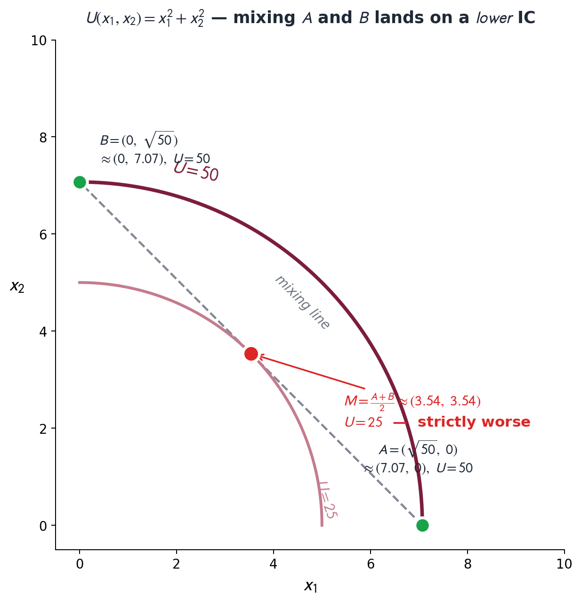
Walkthrough 4.8 — Identifying a convexity violation
📱 Alex's smartphone world. \(x_1\) = hours/week using iOS apps (iMessage, AirDrop, Apple Pay…); \(x_2\) = hours/week using Android apps (Pixel features, Google Pay, cross-platform sync). All-iOS or all-Android compounds the value of each app inside that ecosystem; a 50/50 mix splits Alex's data, messages, and integrations across two walled gardens that don't talk — halving what each is worth. The \(x_1^2 + x_2^2\) shape captures it: utility grows faster than linear within a platform, so corners beat the middle.
\(U(x_1, x_2) = x_1^2 + x_2^2\) at \(\bar U = 25\)
Step 3 — convexity test: midpoint utility \(12.5\) is strictly less than \(25\). Convexity says averages \(\succsim\) extremes; here midpoint \(\prec\) extremes. Violated.
The lock-in tax — in numbers. Going 50/50 hands Alex \(U = 12.5\) — exactly half the utility of going all-in (either platform gives \(U = 25\)). Mixing literally throws away half the value. The consumer strongly prefers specialization — the smartphone / airline-status lock-in pattern.
What breaks in Ch 5. The standard tangency rule \(\mathrm{MRS} = p_1/p_2\) assumes convex preferences. Non-convex cases require checking the second-order conditions and may have multiple local optima.
Application 4.5 — Smartphone ecosystem lock-in
U.S. v. Apple Inc., Mar 21 2024 (D.N.J.). The DOJ complaint catalogs five lock-in mechanisms creating measurable utility cost when consumers mix platforms:
1. iMessage blue-bubble protocol (cross-platform texting downgraded)
2. AirDrop / Continuity (Apple-to-Apple only)
3. Apple Watch tight pairing (no Android)
4. App Store exclusive distribution
5. Apple Pay NFC chip (no third-party wallets on iOS)
85%+
iPhone-user year-over-year retention — far higher than freely-reoptimizing consumers under smooth ICs would predict
Frequent-flyer mirror. Behrens, de Jong & van Ommeren (2024, Transportation Research B): forfeiting top-tier status carries a switching cost of 30–41% of ticket price. Same shape: two corners deeply preferred to the middle.
The non-convexity geometry is the policy question. DOJ argues interoperability flattens the corners; Apple argues the integration is the consumer surplus.
Heads Up 4.4 — "Convex preferences" vs. "convex function"
A perennial terminology trap. They are inverses in this context.
Convex preferences
Upper contour set is convex; ICs bow toward the origin.
Math language: \(U\) is quasi-concave (or concave).
Convex function \(U\)
Level sets bow away from the origin (e.g., \(U = x_1^2 + x_2^2\)).
Represents non-convex preferences!
Math Appendix A.7 sorts out the formal definitions of concavity, convexity, and quasi-concavity.
Poll #3: Which utility violates convexity?
Pick the utility function whose preferences violate the convexity axiom:
A) \(U = x_1^{1/2} x_2^{1/2}\) (symmetric Cobb-Douglas)
B) \(U = 3 x_1 + 2 x_2\) (perfect substitutes)
C) \(U = \min(2 x_1, x_2)\) (perfect complements)
D) \(U = x_1^2 + x_2^2\) (lock-in)
60 sec to vote
Answer: D — \(U = x_1^2 + x_2^2\)
\(U = x_1^2 + x_2^2\) has level sets bowed outward; the midpoint of two indifferent corner bundles is strictly worse. (A), (B), (C) all have weakly-convex upper contour sets — their indifference curves either bow toward the origin or are linear / L-shaped along the boundary.
Trap: Perfect substitutes (B) and perfect complements (C) sit at the boundary of the convexity definition — their preferences are weakly convex (averages are weakly preferred to extremes, with equality possible). They satisfy the axiom; the cleanest violation is the lock-in case (D).
§4.6 From Preferences to Choice
8 min · Bridge to Ch 5 — the tangency \(\mathrm{MRS} = p_1/p_2\)
Ch 5 preview: optimization adds the budget
Add a budget constraint \(p_1 x_1 + p_2 x_2 \leq I\). Among all affordable bundles, the consumer picks the one on the highest indifference curve.
Marginal utility per dollar equalized across goods. \(\lambda\) is the marginal utility of income — the Lagrange multiplier on the budget. Both formulations come out of the Lagrangian. We derive it on Day 1 of Ch 5.
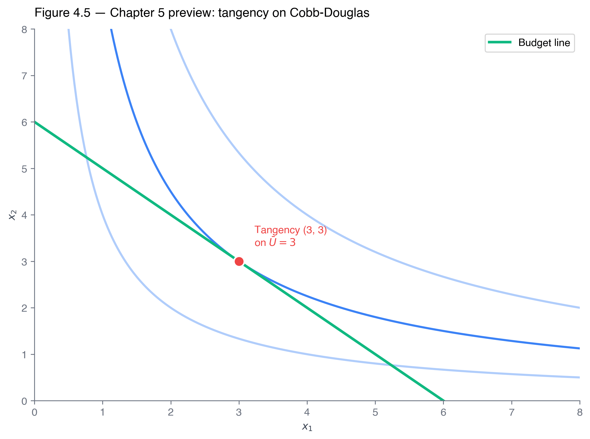
When the tangency rule doesn't apply
Perfect substitutes
Constant MRS = \(a/b\). Generic prices \(\Rightarrow\) corner. Tangency holds only on a measure-zero price ratio.
Perfect complements
Optimum at corner \(a x_1 = b x_2\) regardless of prices. MRS undefined (kink). No tangency to compute.
Non-convex prefs
Tangency may exist but be a local maximum, not a global one. Need second-order conditions.
For interior optima with smooth, strictly convex preferences (Cobb-Douglas, smooth quasilinear), the tangency rule is the workhorse for Chs 5–19. We will use it routinely.
Discussion 3 — Would interoperability shrink the non-convexity?
A roommate values an all-Apple bundle (\$1,200 of Apple devices) and an all-Android bundle (\$1,200 of Android) equally — but is strictly worse off with a 50/50 mix.
Sketch a plausible utility function for this roommate. (Hint: \(U = x_1^2 + x_2^2\) is the cleanest closed form.)
Which of the four axioms does this preference structure violate?
If the DOJ's interoperability remedy succeeds — iMessage on Android, Apple Watch pairs with Pixel — does the depth of the non-convexity shrink, stay the same, or become ambiguous?
Think 2 min · Pair 2 min · Random call × 3
Press ↓ to reveal sample answers.
Discussion 3 — Sample Answers
(1) Utility function
\(U = x_1^2 + x_2^2\). Level sets bow away from the origin; the midpoint of two indifferent corner bundles lands on a lower curve.
(2) Axiom violated
Convexity. Averages should be weakly preferred to extremes; here the 50/50 mix is strictly worse than either corner.
(3) Interoperability ⇒ shrink
If integration works across platforms, the midpoint is no longer "lose-lose" — the bowed-outward curves flatten toward a smooth, convex Cobb-Douglas shape.
The contested part
Apple's counter: the integration is the consumer surplus. Mandating interoperability could dismantle features consumers actively prefer — so the welfare verdict depends on whose framing you accept.
Pattern. Non-convexity is a geometric fact (the curves bow the wrong way); whether to "fix" it with policy is a normative question the geometry alone can't settle.
Poll #4: Health-insurance MRS interpretation
Maya has \(U(C, m) = 10\sqrt{C} + m\) with \(C = 25\). We computed \(\mathrm{MRS}_{C, m} = 1\). What does \(\mathrm{MRS} = 1\) tell us?
A) Maya is at her optimal coverage
B) Maya would pay \$1 for the next small unit of coverage
C) Maya values coverage twice as much as money
D) Maya is risk-averse
60 sec to vote
Answer: B — \$1 marginal WTP
The MRS in a quasilinear-in-money utility is the marginal willingness to pay. \(\mathrm{MRS} = 1\) at \(C = 25\) means Maya gives up \$1 of money for one (small) more unit of coverage. Below \(C = 25\), MRS > 1 (would pay more); above \(C = 25\), MRS < 1 (would pay less).
Trap (A): Optimal coverage requires comparing MRS to the price of coverage \(p_C\) — the budget constraint isn't on the page yet. (D) confuses preferences with attitudes toward risk — that's Ch 15.
Slutsky decomposition. The MRS is one input. The premium-increase comparative static for Maya: substitution + income effects (income effect = 0 by quasilinearity).
Ch 7
Production functions + MRTS. Same implicit-differentiation trick we used to get the MRS. \(\mathrm{MRTS} = MP_L/MP_K\).
Ch 15
Expected utility. Maya's preferences over health states with risk; reference-dependent prospect theory bends ordinal preferences in surprising ways.
Ch 16
Adverse selection. High- and low-risk consumers with different preferences shop the same exchange. Rothschild-Stiglitz separating menu.
Key Takeaways
Four axioms. Completeness, transitivity, monotonicity, convexity. Each does specific geometric work; each has a real-world failure mode.
Utility is ordinal. Any strictly increasing transformation \(V = g(U)\) represents the same preferences and yields the same MRS. The cancellation, not philosophy, is the operational content.
The MRS is a derivative. \(\mathrm{MRS} = MU_1/MU_2 > 0\). One equation bridges geometry and calculus — and we'll reuse it for MRTS in Ch 7.
Four canonical families. Cobb-Douglas (workhorse, smooth), perfect substitutes (constant MRS), perfect complements (L-shape, kink), quasilinear (no income effect).
Non-convexity is real. Lock-in markets — smartphone ecosystems, frequent-flyer status — produce non-convex preferences. Tangency rule fails; corners win.
Bridge to Ch 5. The MRS is one half of the optimum; the price ratio is the other. They meet at the tangency: \(\mathrm{MRS} = p_1/p_2\).
The Netflix recommender, Spotify Taste Profile, and ACA marketplace all encode an ordinal ranking of bundles. Today we wrote the page-and-pencil version. Ch 5 picks the optimum.
Exit Ticket (2 min)
A consumer has \(U(x_1, x_2) = x_1^{2/3} x_2^{1/3}\). One sentence each.
Compute the MRS at the bundle \((6, 4)\).
Define a transformation \(V\) of \(U\) that simplifies the algebra. Verify your \(V\)'s MRS at \((6, 4)\) matches.
Sketch one indifference curve through \((6, 4)\). Where does it bow?
One sentence: the consumer's preference weight on \(x_1\) is \(\alpha = 2/3\); how would the IC shape change at \(\alpha = 0.1\)?
Drop in your section folder before you leave. Next class: Ch 5 — Constrained Choice + Lagrangian.
Resources for self-study
Textbook
Goolsbee/Levitt/Syverson 4e ch 4 (preferences); Varian Intermediate Microeconomics with Calculus chs 3–4.
Math Appendix A
A.2 partial derivatives; A.3 total differentiation + IFT (the MRS derivation); A.7 concavity, convexity, quasi-concavity.
BLS CES — bls.gov/cex/tables.htm (income-quintile shares). Netflix Top 10 — netflix.com/tudum/top10. U.S. v. Apple Inc. — complaint Mar 21, 2024 (D.N.J.).
Next class: Ch 5 — Constrained Choice and Utility Maximization.